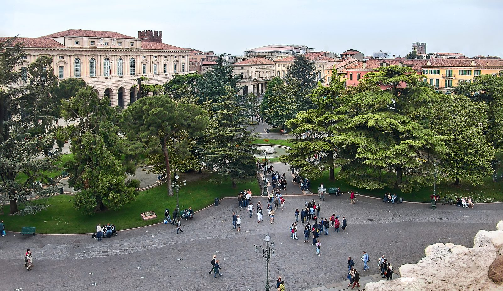

Giorno 4 di 7 · Martedì 11 agosto · Alba → Torino → Milano → Verona
Ultima mattina a Torino, poi il treno per Verona
📌 In sintesi
- Mattina: treno regionale Alba→Torino, poi l'ascensore panoramico della Mole.
- 13:00 Italo Torino→Milano, cambio, 15:35 Italo Milano→Verona (arrivo 16:55).
- Check-in all'Hotel Leopardi, prima serata a Verona.
🕘 Itinerario della giornata
- 08:45Saluti e verso la stazione di Alba. Bagagli pronti: oggi si cambiano tre treni più un tratto di metro.
- 09:07Treno regionale SFM4 Alba → Torino Lingotto, arrivo 10:14 (1h07, confermato su Trenitalia). La linea ha corse orarie al minuto 07: se questo slot non va bene, ce n'è un altro un'ora dopo o uno prima.
- 10:14Arrivo a Torino Lingotto. Non è Porta Susa: da qui serve la metro Linea 1 verso il centro, 9 minuti fino a Porta Susa (biglietto urbano GTT, ~2 €).
- ~10:25Arrivo a Torino Porta Susa e nuovo deposito bagagli in un locker della zona (stesso servizio del Giorno 1).
- 10:40Verso la Mole Antonelliana, 15-20 minuti a piedi da Porta Susa.
- 11:00Mole Antonelliana, ascensore panoramico — la salita rimandata dal Giorno 1 diventa oggi il punto fermo della mattinata, non più facoltativa. Contate 30-40 minuti fra fila, salita e vista sulle Alpi dalla cupola.
- 11:45Pausa dolce da Baratti & Milano, Piazza Castello — il bicerin che sabato non avete avuto tempo di fare, se il tempo lo permette.
- 12:15Pranzo da Gofreria Piemonteisa, vicino a Piazza Castello — il gofri, il waffle salato tipico piemontese, farcito: lo street food locale più veloce che c'è, perfetto con tre treni da prendere oggi.
- 12:40Ritiro bagagli e rientro a Porta Susa con margine.
- 13:00Italo 8143, Torino P.S. → Milano Centrale, arrivo 14:00 (Smart).
- 14:00Cambio a Milano Centrale, 95 minuti. Con le valigie non conviene rischiare un'uscita in metro verso il Duomo: restate in zona stazione — la facciata monumentale di Milano Centrale è già un motivo per alzare gli occhi — e usate il tempo per un caffè o un pranzo più completo se a Torino avete solo spuntinato.
- 15:35Italo 8989, Milano Centrale → Verona Porta Nuova, arrivo 16:55 (Smart).
- 17:15Check-in all'Hotel Leopardi, Via Leopardi 16.
- 18:00Prima passeggiata serale: Piazza Bra e l'esterno dell'Arena, illuminata e viva di sera. Ci si torna sul serio giovedì, per il Carmina Burana.
- 19:30Cena da Osteria Verona Antica, Via Sottoriva — osteria tipica a due passi da Piazza delle Erbe, ritrovo dei veronesi, con angolo enoteca dedicato ai vini locali.
🗺️ La mappa del giro
🍷 Dove mangiare

- Metà mattina, se c'è tempoBaratti & Milano, Piazza Castello — il bicerin rimandato dal Giorno 1. Dopo la Mole, è il primo a saltare se si è in ritardo.
- PranzoGofreria Piemonteisa, vicino a Piazza Castello — gofri dolci o salati, il modo più veloce di mangiare qualcosa di davvero piemontese fra un treno e l'altro.
- Cambio a MilanoUn caffè o uno spuntino dentro Milano Centrale, se a Torino avete mangiato poco. Con 95 minuti e le valigie appresso, meglio non allontanarsi.
- CenaOsteria Verona Antica, Via Sottoriva — osteria tipica a due passi da Piazza delle Erbe, ritrovo dei veronesi, con una buona selezione di vini locali.
💡 Note e dritte
Perché la Mole e non il Palazzo Reale. Fra le due mattine a Torino (Giorno 1 e oggi) resta forse un'ora scarsa di visita vera, tolti spostamenti e cibo: non basta per il Palazzo Reale fatto con calma, che con gli interni vuole almeno un'ora abbondante. L'ascensore della Mole si fa in 30-40 minuti coda inclusa e dà comunque il momento panoramico della città. Il Palazzo Reale resta un buon motivo per tornare a Torino con più tempo, come il Museo Egizio.
Il regionale arriva a Lingotto, non a Porta Susa. È il dettaglio che cambia le carte in tavola: il treno da Alba non porta in centro, serve un tratto di metro Linea 1 (9 minuti, diretta, niente cambi) per arrivare a Porta Susa. Comodo controllare al momento dell'acquisto se quel treno prosegue anche verso Porta Susa: se sì, si risparmia la metro; se no, la metro resta comunque semplice e frequente.
Oggi si cambiano tre treni in un giorno, più la metro. Regionale Alba→Torino, poi due Italo via Milano: nessuna delle coincidenze è stretta (95 minuti a Milano sono ampi), ma con i bagagli grandi conviene muoversi con margine invece che di corsa.
A Milano non si esce dalla stazione. Novanta minuti basterebbero appena per un'andata e ritorno veloce al Duomo, ma con le valigie e il rischio di un ritardo della metro non vale il rischio di perdere l'Italo delle 15:35. Milano si rimanda a un altro viaggio.
Il Festival lirico dell'Arena si tiene proprio in queste settimane d'estate, e avete già scelto lo spettacolo: Carmina Burana, giovedì 13 — dettagli nel Giorno 6.
Se oggi non gira. Si taglia il bicerin, non la Mole Le tre coincidenze ferroviarie sono fisse e già in biglietto: quello che si accorcia per primo è la pausa da Baratti & Milano, non l'ascensore della Mole, che è il punto fermo della mattinata.